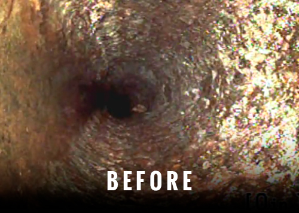
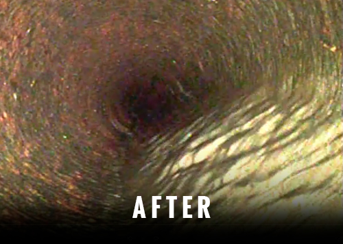

The descaler is designed to work in different types of pipes such as p-trap, U-bend and small pipes with 90-degree bends, the grinding chains are multi-use tools that are extremely effective at removing the large buildup of scale and much more.


There are no interruptions, everything is done internally, and no excavation is required, in just a few hours you are left with a clean sewer system that has a potential to work for years. This process can save you money if you want to get your cast iron pipe back to proper working conditions, and stress-free of clogs.